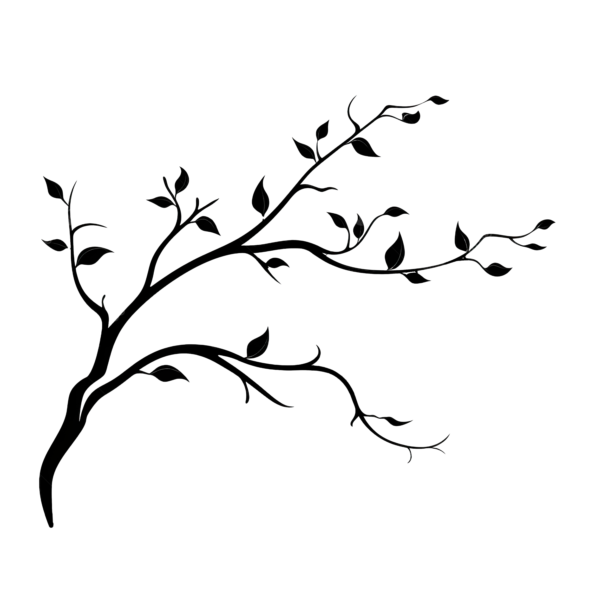
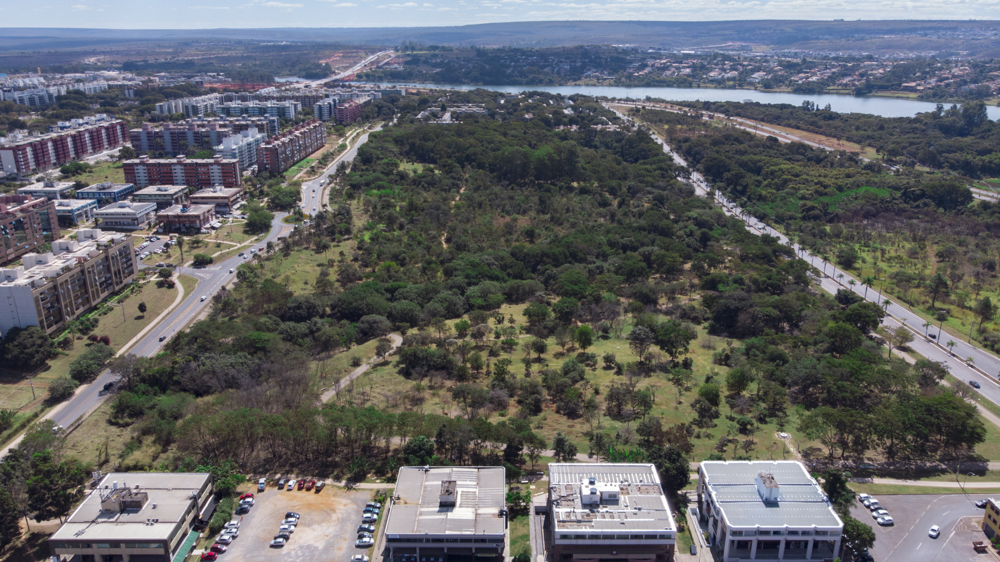
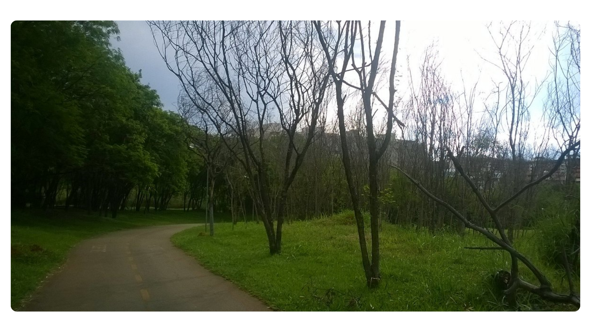
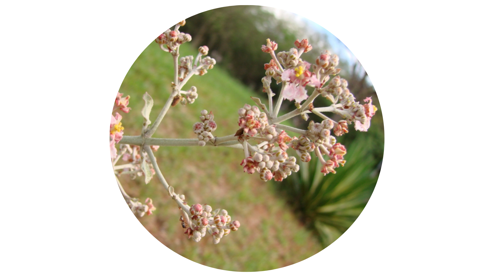
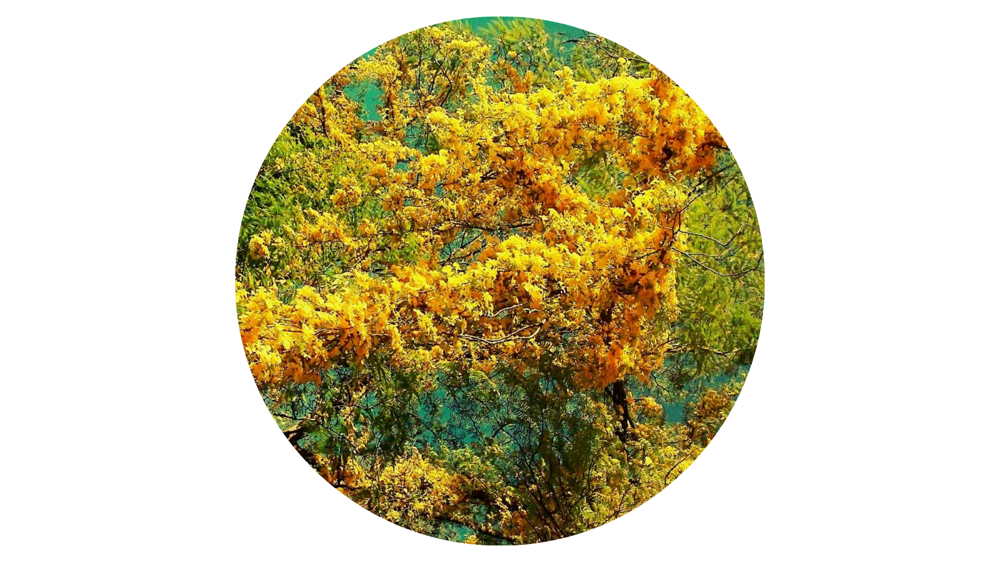

Parque Ecológico Olhos D’água
Sobre el Parque
El Parque Olhos D'Água es un espacio público para recreación y actividades al aire libre ubicado en Asa Norte, Brasília, Distrito Federal. Como parque ecológico, fue creado para preservar la naturaleza y ofrecer un espacio agradable para que las personas disfruten de áreas verdes y paisajes.
Creado en 1994, el parque cubre 28 hectáreas y es uno de los lugares más visitados de la zona. Allí puedes participar en diversos eventos culturales y actividades físicas. El parque conserva la vegetación típica del cerrado y cuenta con un pequeño lago. Está gestionado por el gobierno del Distrito Federal (GDF).
Un Poco Más Sobre
la Historia del Parque...
El parque nació gracias a los esfuerzos de la comunidad local. Para llamar la atención sobre su importancia, la comunidad organizó acciones como marchas por el Eixão do Lazer y, en 1993, construyó un árbol de Navidad hecho con basura recogida del parque, creado por el artista Normando Rodrigues.
La Ley No. 556 estableció varios objetivos para el Parque Olhos D'Água, entre ellos: proteger los manantiales y el lago de la SCLN 414/415; preservar y restaurar la vegetación alrededor del lago; proteger la Cuenca del Paranoá; promover programas de observación e investigación sobre el medio ambiente local; garantizar que los visitantes puedan disfrutar del parque sin dañar el medio ambiente; y desarrollar actividades de educación ambiental.
El parque ofrece una variedad de instalaciones. Puedes utilizar las rutas de senderismo, el parque infantil, el circuito de ejercicios y las instalaciones como baños, bebederos y duchas. También hay quioscos, pistas para correr y bancos para relajarse. Además, el parque cuenta con contenedores de reciclaje para ayudar con la separación de residuos.
CARACTERÍSTICAS DEL PARQUE

El parque está completamente cercado y supervisado por oficiales del Batallón Ambiental de la Policía Militar del Distrito Federal.
Imágens

BIODIVERSIDAD
FLORA
El parque cuenta con tres tipos principales de vegetación: campo cerrado, bosque mesofítico y bosque de galería. Entre los árboles comunes se encuentran el barbatimão, el jacarandá del Cerrado, el faveiro, el pau-jacaré, el angico y el embaúba. Sin embargo, en 2004 se observó que algunas especies de pasto como el brachiaria, el pasto elefante y el pasto gordura habían aparecido debido a actividades humanas.
 Ejemplar de cipó plata (Banisteriopsis oxyclada) encontrado en el parque en 2010.
Cipó amarillo (Cuscuta racemosa) fotografiado en el parque en 2012.
FAUNA
Um mico-estrela (Callithrix penicillata) em uma árvore do parque, em 2015
Puedes ver diversas aves, reptiles, anfibios y peces en el parque. Muchos de estos animales ayudan a dispersar semillas y controlar la cantidad de insectos. Dado que el parque está cerca del lago Paranoá y tiene áreas de bosque mesofítico preservadas, hay muchas aves en el lugar. También hay algunos animales domésticos abandonados, como conejos, tortugas y quelonios. La razón de la baja variedad de especies es que el parque está aislado de otras áreas de cerrado, limitando la migración de animales y reduciendo la diversidad de especies.
ACTIVIDADES
RECREATIVAS
Además de las visitas diarias, el Parque Olhos D'Água acoge diversas actividades, incluyendo eventos culturales, clases de yoga, tai chi chuan, sesiones de meditación y ferias de intercambio de semillas.
En 2010, se lanzó el proyecto "Vô, Vó Malhar é no Parque" con el objetivo de animar a los ancianos a utilizar la Academia de la Tercera Edad (ATI) ubicada en el parque. En 2012, los participantes, que podían unirse de forma gratuita, recibían orientación de profesionales en educación física.
Dirección: Quadra 413 y 414 - Asa Norte, Brasília - DF, 70876-000
Horario de Funcionamiento:
05:30h - 21:00h
Todos los días